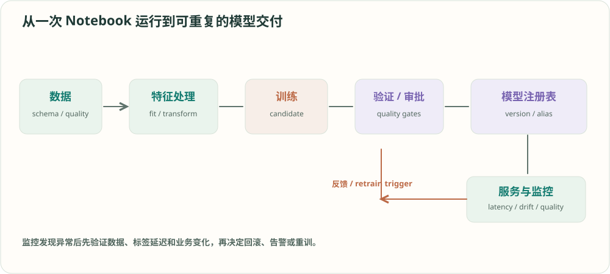
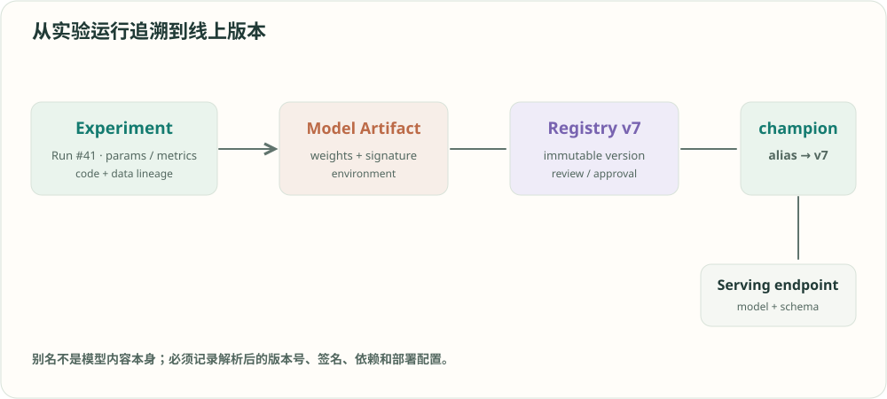
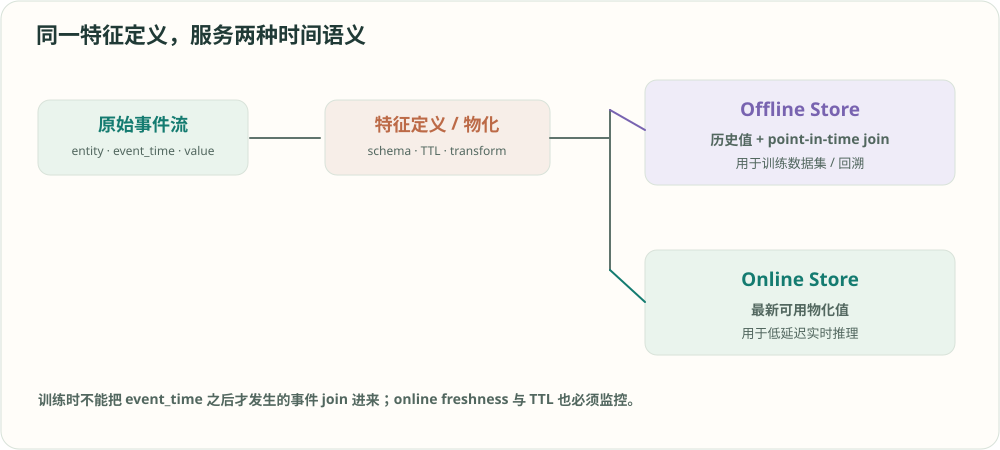

ML 系统工程化：从可复现实验到可观测生产系统
一个模型文件并不是一个机器学习系统。数据校验、特征一致性、实验谱系、模型注册、部署策略与线上监控共同决定模型是否可重复、可回滚、可审计，并能在环境变化时安全迭代。
01 · 生产系统远大于模型代码
一个可交付的机器学习系统至少包含数据源、数据校验、特征生成、训练、评估、模型产物、服务接口和监控。模型代码只是其中一环。模型上线后还会遇到 schema 变化、上游延迟、数据分布漂移、标签延迟、依赖升级、资源约束和业务反馈。若没有可追溯的输入、模型版本与部署记录，模型出错时很难定位问题。
Sculley 等人在 2015 年讨论的“机器学习系统隐藏技术债务”强调了数据依赖、边界侵蚀、配置纠缠、反馈回路和外部环境变化等系统级风险。工程化不是给 Notebook 套一个 REST API，而是把这些依赖变成明确、可测试、可监控的接口。

02 · Pipeline：让训练与推理共享同一组变换
对表格任务，训练时拟合的缺失值填充、数值标准化、类别编码和特征选择都应作为模型管线的一部分保存。否则线上服务可能只加载分类器，却忘记训练时的编码规则；或在训练与推理时分别实现一份看似相同但细节不同的特征逻辑。
scikit-learn 的 Pipeline 与 ColumnTransformer 将预处理和估计器串联，使交叉验证中的每个训练折独立拟合变换。保存时应保存完整管线而非只保存最后一个模型。对于自定义变换，必须保持可导入、版本固定、输入 schema 明确，且避免在 transform 时偷偷重新估计训练统计量。
Pipeline 解决的是同一代码路径内的组合与训练折隔离，不会自动解决线上数据延迟、外部特征定义不一致、数据源权限或分布漂移。
03 · MLflow：让一次运行拥有可追溯的身份
实验管理的基本对象是 Experiment 与 Run。Experiment 组织一个任务的多次实验；Run 记录一次执行的参数、指标、时间、标签、输入数据与输出 artifacts。把代码版本、依赖环境、数据版本、切分策略和随机种子一并记录，才有可能从一个看似不错的指标追溯到具体训练过程。

MLflow Tracking 提供 API 与 UI 记录运行信息；Model Registry 提供模型版本、谱系、元数据和别名管理。当前版本化工作流应优先使用模型版本与 aliases（例如 champion）表达部署指针，不要把旧式固定阶段名误当作所有新版本的通用状态机。别名更新后仍需记录实际部署解析到的版本号。
04 · Feature Store：离线历史与在线实时有不同的时间约束
训练数据通常需要回看过去某个预测时刻已经可用的特征；在线推理则需要低延迟读取当前可用值。Feature Store 把实体、特征定义、事件时间、物化与读取接口组织起来。离线存储适合批量历史提取与训练，在线存储适合实时服务；两者不必是同一个数据库。

Point-in-time join 的关键是按预测时刻只取当时已经发生且可用的特征记录，不能把未来事件值拼回历史训练行。还要考虑事件时间与到达时间不同、迟到事件、TTL、回填和实体键变化。共享定义可以降低重复实现，但不会自动保证离线与在线计算在每个边界条件下完全一致。
05 · Training-serving skew：同名特征不代表同一语义
常见偏差包括：训练时使用过去 30 天自然日窗口，线上使用滚动 720 小时；训练数据使用完整回填，线上只看到迟到前的事件；训练时缺失值按中位数填充，线上把缺失当 0；训练和服务对时区、去重、实体主键或类别字典的处理不同。
要减少这种偏差，应尽量复用特征定义与变换代码；记录特征 schema、版本、窗口边界、时区、单位、缺失语义和数据新鲜度；对同一批实体与时间戳做离线/在线对照测试。Feature Store 是组织与服务基础设施，不是数据质量保证书。
06 · MLOps 成熟度：自动化训练不等于自动批准上线
Google Cloud 的 MLOps 指南用三个成熟度层次描述常见演进：Level 0 以人工和脚本为主；Level 1 自动化 ML pipeline，并引入持续训练、数据与模型验证；Level 2 进一步自动化 pipeline 组件的 CI/CD，测试与发布更系统。它是一套参考框架，不是适用于每个团队的法定成熟度标准。
自动化的边界应清晰：代码变更可以自动测试与构建；新数据可以触发候选训练；候选模型必须通过数据质量、性能基线、分组指标、延迟、资源和安全检查；只有满足审批策略才提升部署版本。对高风险系统，人工审查、灰度发布、回滚和独立审计仍然重要。
07 · 监控：区分数据漂移、概念漂移与性能退化
数据漂移通常指输入分布变化；概念漂移指输入与目标关系随时间变化；性能退化是模型在可观测标签上实际变差。它们相关但不等价：输入分布变了，模型性能未必下降；模型性能下降，也可能来自标签定义变化、测量流程错误或上游 schema bug。
监控层应同时覆盖数据 schema/范围/缺失/新鲜度、预测分数分布、服务延迟/错误率、资源消耗、标签到达后的性能指标和重要分组误差。每个告警都要有 owner、调查步骤和回滚/重训条件。若标签尚未到达，就不能把输入漂移指标称为已测量的模型准确率。
08 · 可运行实验：把预处理、模型和输入契约一起保存
下面构造一个混合数值/类别的表格任务。所有填补、标准化和独热编码都在 Pipeline 中拟合；测试数据包含一个训练时未见过的城市，handle_unknown='ignore' 使其编码行为明确。保存与重新加载的是整个管线。
import tempfile
from pathlib import Path
import joblib
import numpy as np
import pandas as pd
from sklearn.compose import ColumnTransformer
from sklearn.impute import SimpleImputer
from sklearn.linear_model import LogisticRegression
from sklearn.model_selection import train_test_split
from sklearn.pipeline import Pipeline
from sklearn.preprocessing import OneHotEncoder, StandardScaler
rng = np.random.default_rng(18)
n = 360
age = rng.normal(42, 11, n)
income = rng.normal(65000, 18000, n)
city = rng.choice(["Tokyo", "Osaka", "Fukuoka"], n)
plan = rng.choice(["basic", "plus"], n)
logit = -2.0 + 0.035 * (age - 40) + 0.000025 * (income - 60000)
logit += (plan == "plus") * 0.65 + (city == "Tokyo") * 0.25
prob = 1 / (1 + np.exp(-logit))
y = (rng.random(n) < prob).astype(int)
X = pd.DataFrame({"age": age, "income": income, "city": city, "plan": plan})
X.loc[::31, "income"] = np.nan
X_train, X_test, y_train, y_test = train_test_split(
X, y, test_size=0.2, stratify=y, random_state=18)
numeric = Pipeline([
("impute", SimpleImputer(strategy="median")),
("scale", StandardScaler())
])
categorical = Pipeline([
("impute", SimpleImputer(strategy="most_frequent")),
("encode", OneHotEncoder(handle_unknown="ignore"))
])
preprocess = ColumnTransformer([
("numeric", numeric, ["age", "income"]),
("categorical", categorical, ["city", "plan"])
])
pipeline = Pipeline([
("preprocess", preprocess),
("classifier", LogisticRegression(max_iter=1000))
])
pipeline.fit(X_train, y_train)
# 模拟线上输入：出现训练期未见的类别值
online = X_test.iloc[:5].copy()
online.loc[online.index[0], "city"] = "Nagoya"
before = pipeline.predict_proba(online)[:, 1]
with tempfile.TemporaryDirectory() as tmp:
path = Path(tmp) / "full_pipeline.joblib"
joblib.dump(pipeline, path)
loaded = joblib.load(path)
after = loaded.predict_proba(online)[:, 1]
np.testing.assert_allclose(before, after)
print("model artifact:", path.name, "bytes:", path.stat().st_size)
print("probabilities:", np.round(after, 3))
assert np.all(np.isfinite(after))需要 Python 3.10+、NumPy、pandas、scikit-learn 与 joblib。该示例只证明本地管线保存/加载和未知类别的处理，不构成远程模型服务或生产部署演示。
09 · 可运行实验：记录一次 MLflow 运行
MLflow Tracking 可以在本地记录参数、指标和工件。下面使用临时目录中的 SQLite 后端创建隔离的 tracking store，避免在仓库根目录留下运行数据；现代 MLflow 已将旧 file-based backend 置于维护模式。正式团队部署仍应配置受控的 tracking server、后端数据库和 artifact store。
import json
import tempfile
from pathlib import Path
import mlflow
with tempfile.TemporaryDirectory() as tmp:
tracking = Path(tmp) / "mlruns"
tracking.mkdir(parents=True, exist_ok=True)
database = tracking / "mlflow.db"
mlflow.set_tracking_uri(f"sqlite:///{database}")
mlflow.set_experiment("mlops-tutorial-18")
with mlflow.start_run(run_name="pipeline-contract-demo") as run:
mlflow.log_params({
"model": "logistic-regression",
"preprocessing": "column-transformer",
"seed": 18,
})
mlflow.log_metrics({
"validation_balanced_accuracy": 0.71,
"validation_average_precision": 0.42,
})
manifest = {
"data_contract": ["age:float", "income:float", "city:string", "plan:string"],
"split_seed": 18,
"note": "illustrative metadata, not a benchmark result",
}
manifest_path = Path(tmp) / "run-manifest.json"
manifest_path.write_text(json.dumps(manifest, indent=2), encoding="utf-8")
mlflow.log_artifact(str(manifest_path))
run_id = run.info.run_id
client = mlflow.tracking.MlflowClient()
recorded = client.get_run(run_id)
print("run id:", recorded.info.run_id)
print("logged params:", recorded.data.params)
print("logged metrics:", recorded.data.metrics)
assert recorded.data.params["model"] == "logistic-regression"
assert "validation_average_precision" in recorded.data.metrics需要 Python 3.10+ 与完整的 mlflow 包；SQLite 后端依赖 SQLAlchemy，而 mlflow-skinny 不包含该后端依赖。指标数值在此处是明确标注的元数据示例，不是模型评估结果。Model Registry 的版本与别名管理通常需要完整的 Registry 后端配置；这段本地 Tracking 示例没有创建或发布 Registry 版本。
10 · 发布前检查与来源
一次可审计发布至少需要：数据与特征 schema、代码 commit、依赖锁定、训练数据时间范围、切分与随机种子、参数和指标、模型工件签名、运行时镜像、资源需求、部署版本、回滚目标和监控告警。若这些信息无法回答，系统仍然不可复现。